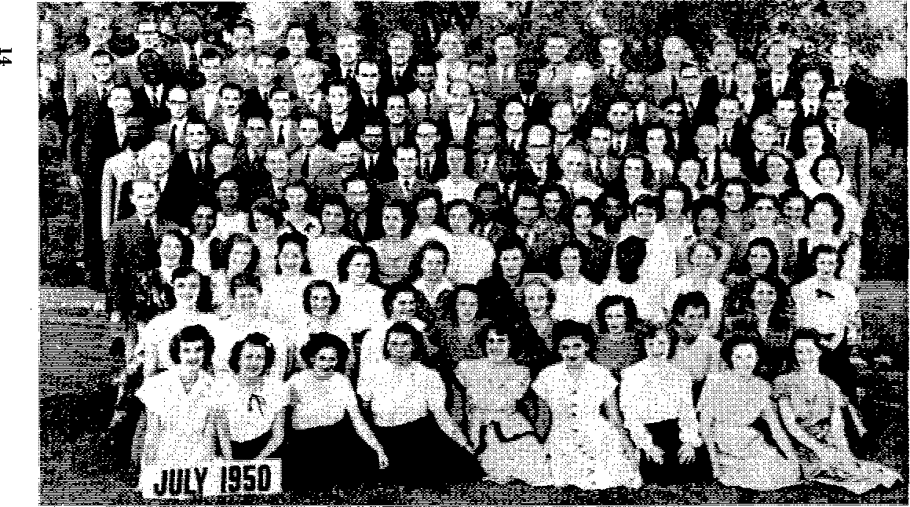
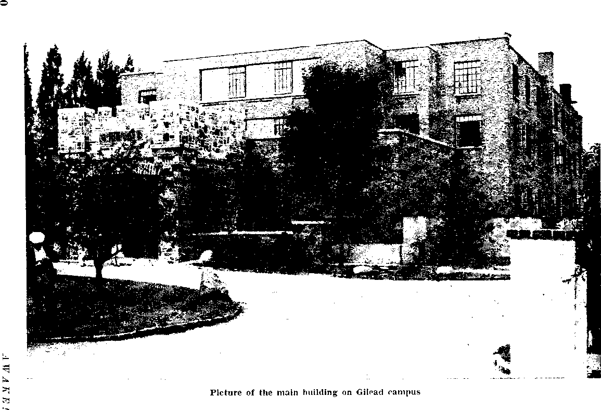
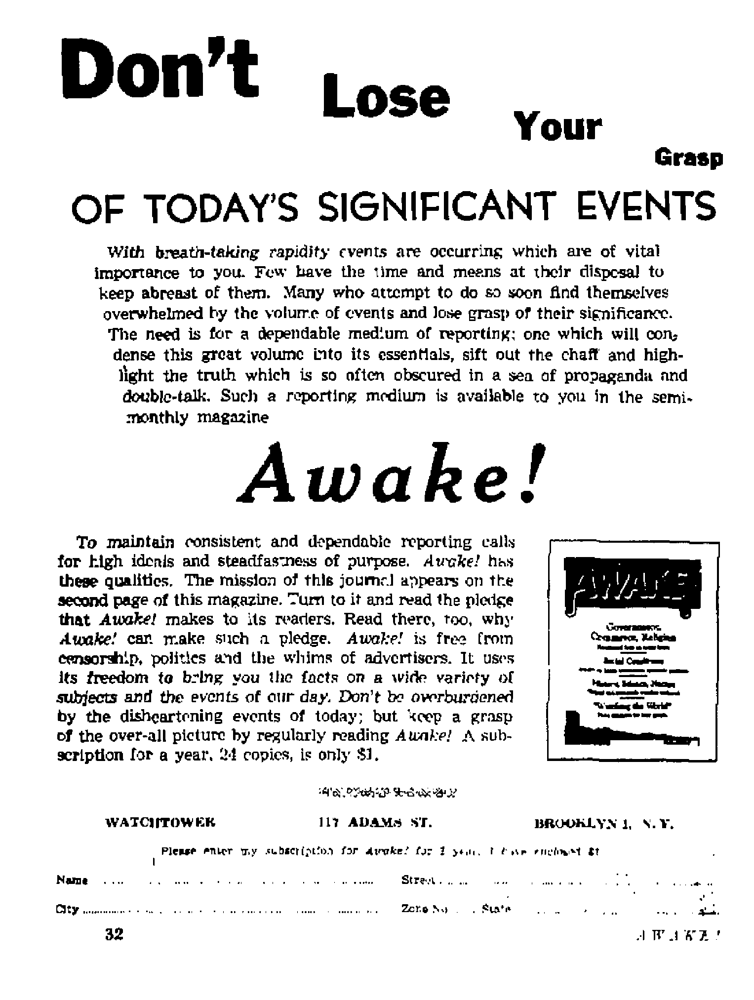

CATHOLICISM’S CRUSADES
—Past «nd Present
"In the last days critical rimes hard to deal with will be here"
Held at Yankee Stadium, New York, July 30 to August 6
An analysis that leads to a correct answer
OCTOBER 8, 1950 semimonthly
THE MISSION OF THIS JOURNAL
News sourert that are- able to k**y you awtlw to tiw vital tames of dur times mult be unfettered by cunjon^dp and selfish intereeta. “Awake T ha* ryj fcttere. It wugnteed facta, faces facte* !e free to publish faete. It to not bound by pemtieal ambitions or obligations; it to unhampered by adv^Wisenr whose inif swift sat he trodaeo an; it It unprejudiced by traditional creeds. This Journal keeps itself irve that it may speak freely to you. But It does not abuse its freedom. It maintains integrity to truth.
“ Awake I" uses the regular news chatweln, but Is not dependent on them. Its own correspondents are on all continents, in scores of nations. From the four comers of the earth their uncensored, on-the * scenes reporta come to you through these columns. This Journal's viewpoint ta not narrow, but is international. It is read in many nations, Iti many languages, by persons of all ages. Through Ite pages many fields of knowledge pass in review—government, commerce, religion, history, geography। science, Social conditions, natural Wonders—why, its cover* age to as broad as the earth and as high os the heavens,
“Awake!" pfetigee itself io righictw principle^ to exposing hjJJrsi foes and subtle dangers, to championing freedom for all, to comforting mourners and strengthening those disheartened by the failures df a delinquent world, reflecting sure hope for the establishment of a righteous New World.
Get acquainted with “Awake!” Keep awake by reading "Awake!”
±*nBLI SUS & BsmiiI'JniiuijT Bi WAICHTOWl® BIBLE AND THAI IT teOCIEUT, INC, 11? Adams Street Jjroaklyn 1a N. l't| (J. fi. A.
N. H. KNftTca, GMAHT J&TXTHE, iidEcdi^rifY
Printing tTlLi kaaue: fl 10,0)0 Five Cinta n fltbpy
l>.njj±<ja h wfel^h thk ^^zini li HftlllhM: #atfiTTCirrdA?r J&i-riAd, (Aramr, iioWf. JjvttcA-to—t.frlbiBai, LMlibih. I’Ttfiiir Gr#K Pmrtrajt, HraEJiti! UhnUnjtt..
flflkw J tvlj udlslplan JWe
AEtflU. 1IT Adum* BnjulUn 1. N'T. |1 Arflnll&t 11 Herrtgri lid., HtT-llifl-Hld, N R.W, 61 Cinid-A ilD IlVtn Aw-. P 7unoLu -J* DuttElO 4] Emlanr. M Crar» Taru*, Lwfrn. W- 2 &Mtb AMij Jfctaa 4'XtaA, Clpb Ton fj
BnUTri U IKWifl-rlnpi nuH.Br 1L Kni±Jfwr
IklMhttfRW ibdUL9 t* ml W efl!« m !W oti-.'fl1 J.7 aAi ffpfedlta.1 A1? (Vi-ri'mitaT
ftvTr flrUnny of »mmv. BrUIjIlmILQek *Tv BtetyLtd Bl Bruuhlra Jrrtil CQ^trLfE a# ijtffw U t? luUfriUtfHl tatttT ButatflpiJiHi
tjilta In dlfltWt rr-iril-riA sir hn*n itaUd tn Inrvl rwTfnry. NbUb Rf bklntlW (vIUi num] btaulj li moL uL JtafiL Lio BHH tvTWi JUhflljIijjQ «■ jjirtk ChuM 4T aiflrtn wbta nuI i* dhr auj ttt MP4H4d nTmeJib Titfih rapttli, JJwfl S’[CT Old W Uni! m Dim tutrfaeu.
K V., AtL <J Hird 3, mH, [Ttatfti ID U-M. A-
CONTENTS
|
Catholicism's Crusades—l’asi and Present |
3 |
The Detter Hail—Which? |
21 |
|
The First Crusade |
& |
■ Trying to Understand Them |
21 |
|
Succeeding Crusades |
5 |
Which Is the Stronger Sex? |
22 |
|
Modern Crusades |
7 |
She Sloops to Conquer’ |
23 |
|
Will the Hierarchy Win ur Lose? |
8 |
Vive la Difference! ’ |
24 |
|
Tha Rising Tide of Crime |
9 |
Drawing Tooth-Relic Worship | |
|
Whole World Gone Mad With Violence |
10 |
into Politics |
25 |
|
Cradle of Crime Never Empty |
11 |
Bavin’s Visit and Red Reaction |
2B |
|
International Assembly of |
Gnminuniste Seek to Shut Attentkm |
27 | |
|
Jehovah’s Witnesses |
ia |
Watching the World |
29 |
Volume XXXI
Brooklyn, N. Y., October 3, UM
Number IS
TO THE battlefield of a “holy” war this twentieth-century world is being mercilessly driven. As if the groaning population of the war-battered old earth had not sustained enough violence and bloodshed, aggression and oppression, suffering and ruthless destruction of life and property, more is demanded by modern religious crusaders of the atomic age. Apparently the soil is not yet fertile for the planting of the seeds of peace. Nor will it be until untold millions more of earth’s humanity are offered on the altar of false religion to pacify whatever strange gods it serves.
The present crisis is not altogether unlike a situation of some 800 years ago, when a similar cry of “holy- war” rang throughout Christendom. If today’s Western democracies contemplate such a campaign, let them at least consider the effect a series of “holy wars” had on Western Europe of nearly a millennium ago. The chief propagandist for the crusades would be the same both then and now, Roman Catholicism.
Yes. Catholicism. But do not permit this to cause alarm on your part. Entirely without malice and prejudice it is stated, to enable the honest-hearted person to act to safeguard himself. Do not forget that those who suffered the greatest in expenditures of life and limb in the crusades of the past were the obedient adherents of this religion. Those ’numbering the most' casualties were neither the infidels, Mos-lems, Turks nor Jews, no, but the Catholic people. It only follows that it will not be different in a similar campaign if undertaken in our time. Should it not, therefore, behoove all, and especially those of the Catholic religion, to examine the crusades of Catholicism, both in the past and the present? It does; and none who are fair-minded and sincere have any reason to hesitate at such an investigation.
Purpose of Crusades
The crusades of the past were a series of wars undertaken from the close of the eleventh to the close of the thirteenth centuries, professedly for the purpose of delivering the land of Palestine from domination by the Turks and the Mohammedans. This was demanded to liberate sacred shrines and to atone for injury to “Christian” pilgrims. Pilgrimages to Jerusalem, which the Encyclopedia Britannica truly states “were not a notion which can be traced back to the earliest ages of the Christian church”, had become very frequent at about the beginning of the eleventh century. The opinion then almost universally accepted, that the end of the world was at hand, induced vast numbers of the people to sell all their possessions in Europe and set out for the “Holy Land”, there to await the coming of the Lord.
These pilgrimages the Arabs protected
OCTOBER 8, 1950
as long as they remained the masters of Palestine, but the situation changed in the year 1075, when the Seljukian Turks conquered the country. The pilgrims then were wantonly insulted, oppressed and even massacred as their sanctuaries were profaned and their worship interrupted. On their return to Europe (those that did return) the lamentable accounts which they recited went far toward fanning into flames the feelings which hitherto had not been awakened in sufficient strength. However, the idea of an armed host by which to inflict vengeance upon the oppressors had already dawned upon the mind of Pope Gregory VII. He had addressed letters to all the rulers of Europe, inviting them to make war against the Turks. However, Gregory was obliged to defer the projected enterprise, as more pressing interests arose to claim his attention,
But Gregory had been dead only ten years when his successor, Urban n, convoked the Council of Clermont in November of the year 1095, Supported by 13 archbishops, 225 bishops and 400 mitred prelates in attendance, he found that there was no longer any need for holding back in this “'holy” war. History records, although not universally so, that this was due to a large extent to the rabble-rousing of one Peter the Hermit (of Amiens), who, with letters from the patriarch of Jerusalem to the pope and the princes of the European sovereignties, had traversed with speed and success portions of the countries of Italy, France and Germany, preaching everywhere with excessive vehemence the profanation of the sacred places and the miserable condition of the poor pilgrims in Palestine, from which he had returned. Armed with the approbation of the pope and with his encouragement and blessing, it was said to prove no difficult task for Peter to impart to others the fanaticism with which he was himself animated.
4
Whether the story of the hermit’s success in rouging the peoples of Europe is true or grossly exaggerated, it is nonetheless to be seen that as Urban ascended a towering platform at Clermont his speech was directed to an audience well prepared and impatient. Long before he had reached his conclusion the shout of the thousands assembled interrupted the Roman pontiff, and with one voice they exclaimed: “It is the will of God! It is the will of God!’’ Those words were made the battle-cry as the council unanimously resolved on the “holy” war. The pope declared, and he was backed in this decree by all the other princes of the church present, that all who should enroll in the sacred militia would enjoy plenary indulgence and obtain remission of all their sins.
Thus was sanctioned the mighty campaign which eventually hurled the forces of medieval Christendom against the unbelievers of the East. The pope himself was solicited to become the head of the sanctified warriors, but this position he adroitly declined. The bishop of Puy he named to represent him as apostolic legate with the army.
Other motives than religious ones influenced many crusaders, for assumption of the cross opened prison doors, dissolved debts, hid the guilty and. in all, covered a multitude of sins. But behind it all was the driving force of a blind religious obsession. Subject and prince, master and slave, clergy and laity—-all seemed to have no other duty to perform than that of defending their religion with sword in hand.
It was in the month of November of the year 1095 that the Council of Clermont was held. The departure date for the crusaders to set off for Constantinople as a base for operations had been fixed as August 15, 1096. However, only a few months of the interval had passed when the hermit
J it' j k /■;!
Peter assumed the task of leading to Palestine a motley mob of more than 60,000 men and women. And what a sight they were! Women appeared in the midst of warriors; old age was to be seen with infancy; riches next to misery; while on all sides resounded the war-cry, “It is the will of God!”
In several separate divisions, including some of the most stupid and savage refuse of the people, they rushed on toward their goal, hesitating occasionally to slaughter the Jews encountered en route. A few thousand under Peter finally reached Constantinople. Thereafter, flinging themselves headlong against the Turks, they became easy prey in a trap prepared for them, and only a pyramid of bones remained to tell their story to those who were to follow.
The much-lauded heroes and leaders were not the great kings and emperors of Europe, but were princes of a second order. They were most notably eight in number, and the main body marched under Godfrey of Bouillon. After encountering many entanglements and difficulties with the Greeks, the crusaders, numbering into the hundreds of thousands, proceeded to do battle with the Turks. The siege of Nice, the battle of Dorylaeum, and the siege of Antioch which followed, are all detailed in the pages of history, and it is not our purpose to here extensively recount these bloody encounters. The camage was horrible in both camps and the indescribable sufferings of the foolhardy and intemperate “holy crusaders” proved fatal to thousands.
Eventually, in the year 1099, the remnants of the once powerful host of an estimated 600,000 came in view of the city of Jerusalem. After a siege of forty days, the city fell into the hands of the cruel and savage bearers of the cross. The slaughter which then ensued was so complete that the blood of the slain gushed down the streets in literal rivers. The gory brutality and butchery which continued for three days saw the hacked and hewn bod*os of men, women and children tossed together in heaps when the massacre came to an end. The helpless Jews the crusaders had disposed of by burning alive in the synagogue.
The First Crusade had ended in apparent success. Rulership passed quickly from Godfrey of Bouillon among numerous other crusaders and their descendants. But the conquests and fortunes of the crossbearers of Catholicism finally Tollapsed. The city of Edessa fell to the Moslems, and this was the event that called for the preaching in the West for another crusade.
The adverse experiences of the First Crusade had imparted little if any instruc-. tion to an obstinate Europe. For that matter, neither would those which were to follow, as more than six successive generations rushed over the open precipice before them. Possessing or recovering a cold tombstone two thousand miles distant seemed to hold an attraction as men of every clime staked their Jives and fortunes on the desperate adventure. In the 200-year period after the Council of Clermont new emigrations of warriors were continually produced, but the seven foremost crusades were not excited without the authority and enthusiasm of the popes of Catholicism and their obedient servants.
Although much time and space could be used in detailing these many “holy” enterprises of refigion, the pattern of them all is at once seen to be of similar cut. The end of the Second Crusade saw the land of Palestine wholly in the hands of the Moslems under their brilliant military commander, Saladin, who on more than one occasion proved to be a man of much higher character than the treacherous crusaders. After the Third Crusade failed to rend Palestine from the hands of Saladin, the fourth proved no more successful. The Fifth Crusade was diverted front its original purpose altogether in the conquest of the Greeks of Constantinople, and the bloody cross-bearers did not even reach the borders of the land which they set out to deliver. The head of the church at Rome had hoped by this engagement to reconcile the Eastern with the Western Church, but this too resulted in utter failure as the gulf became vastly greater and dislike converted to bitter hatred.
Perhaps it was left for the “Children’s Crusade’’ of the year 1212 to expose utterly the religious fanaticism that ruled the period. This expedition was composed entirely of boys and girls of all ages who set out from the towns and villages of France and Germany without leaders, guides or provisions. As only could be expected, these teen-agers, who numbered upward of fifty thousand, soon fell into deplorable suffering and those few who did not perish were sold into captivity by crafty slave merchants. Few if any ever returned to their homes, and fewer still arrived at the gates of Jerusalem.
A Sixth Crusade was crowned with the only sign of success witnessed since the capture of Jerusalem by the first campaign. However*, strange as it is to relate, the one who gained the most for Catholicism’s cause since the First Crusade, the Roman emperor, Frederick II, accomplished such exploits after being excommunicated by the pope for not doing so sooner, and he received no honors nor commendation for his labors.
The crusading fires were dying now as the seventh, eighth, and ninth spent themselves and brought to untimely graves more multitudes of misled fanatics and innocents. At the close of the thirteenth century and after 200 years of sanctified bloodshed the land of Palestine, termed by the crusaders the “Holy Land”, was lost entirely to the Moslems. However, then no grief filled the hearts of the Catholic peoples of Europe as it had a century and more earlier. Pope Nicholas IV and his successors did endeavor to fan the fire to inspire and revive the "holy wars”; but, fan though they did, they could not create the flame.
Today, hundreds of years removed from these ancient crusades of Catholicism, one can rationally consider their result. What was actually gained by all these cruel and bloody wars? Was the cause of Christianity advanced thereby? Was the light of Christ’s gospel spread to other lands and territories? And did more people come to know the blessings the gospel brings ? Brush aside the glamorous whitewash of many treated history books for a moment and consider.
The crusaders, though blessed as they w'ere by the Vatican, lost almost all of their campaigns with the infidels and finally lost all of Palestine, while hundreds of thousands of the innocent and deceived lay silent in the dust as gruesome testimony of the end of that religious road. True, Catholicism prospered and expanded and benefited greatly in power by these her "holy wars”, but the cause of genuine Christianity suffered untold losses, as thousands learned to associate with their conception of Christianity the most corrupt, immoral, degenerate, cruel and vicious murderers. If this was the effect which Christianity had on its advocates they preferred to remain infidels. We skip now such subsequent religious holocausts as the Thirty Years’ War (1618-1648), fomented by the Hierarchy and her Jesuits,
to consider more current Catholic crusades. A feeling of disgust not unlike that of past generations overcomes those who today observe Rome’s crusading antics and her sinister motives.
Impossible! Incredible! Unbelievable! These are the responses of many persons as the prospects of this modem religious war are proffered by the well-informed. Certainly the rulers and ruled today could not be induced and swayed by a twentiethcentury Peter the Hermit or Pope Urban n, # could they? Could they? With mounting Catholic political reverses the heat and fervor of the distant religious war chant have grown ever hotter and louder.
The conviction of Archbishop Stepinac of Yugoslavia; trials and convictions of many priests in Poland and other countries under the Soviet sphere of influence; the conviction, and sentencing of Cardinal Mindszenty of Hungary; and the turning of millions of the “children of the church’’ to communism—all these have caused to mount higher and higher the insults and injuries charged against the present-day infidels, the “godless communists”. Against these it is that the rabble-rousing crusaders are busy drumming up a new “holy war”. So opposed is the Vatican to the communist flood from the East, that she has gone to the limit of excommunicating the many millions of her flock who are adherents of this political party.
Even prior to World War II preparations were in the making for the “holy” warrior’s task, as secret preparations were drawn up by the Roman Catholic Hierarchy with dictator Mussolini in 1929 and Nazi Germany in 1933. These church “swords” were not being forged for any small-scale skirmish, but rather a great crusade was in the offing to “save” the whole world from the awful threat of communism.
The first country to be thus saved was Spain, as the mechanized crusaders of Mussolini and Hitler rolled and flew to the assistance of the bloody rebel Franco, since described by an American cardinal as a “fine Christian gentleman”. Previously the papal-blessed fascists had achieved splendid success in their aggression against helpless Ethiopia in pushing the crusade into Africa. Of that devilish assault Cardinal Schuster of Milan said: <rThe Italian flag is at this moment bringing in triumph the cross, of Christ to Ethiopia to free the road for the emancipation of the slaves, opening it at the same time to our missionary propaganda.”
Thousands fell, as it were, at the edge of the sword of these crusaders, but the major crusade was yet to begin by the modern-day fanatical, wind-jamming Peter the Hermit, the Catholic Nazi dictator Hitler. His blitzkrieg attacks were accompanied by the blessings and prayers of his church, and never once did he suffer the fatal excommunication as had a former crusader, Emperor Frederick H, His assaults against democracy and freedom were accomplished with telling speed and alarming success, and, as he hurled his victorious divisions against the communists, he declared: “We shall recreate the splendid tradition of the Crusades, we shall carry out our mission to bring civilization to the east of Europe. A great field of activity will be opened up and there will be a lot to do for the German Catholic clergy among the people who have run wild and who have been robbed by Jews and Bolshevists, not only of their land, but of their God.”—Vancouver, B. C., Daily Province, January 7, 1941.
In this connection we are also reminded of the dispatch published in the New York Times: “The Catholic bishops of Germany
have issued a pastoral letter stating: ’In this decisive hour we admonish our Catholic soldiers to do their duty in obedience to the Fuehrer and be ready to sacrifice their whole individuality. We appeal to the faithful to join in ardent prayers that the Divine Providence of God Almighty may lead this war to blessed success and peace for our fatherland and nation.’ ’’
But the ardent prayers for blessed success for the cross-bearers under nazism were not answered, and in 1945 bitter defeat came after millions of persons were slain in the vain effort. They paid the price of fighting in and supporting Catholicism’s modern crusade, which completely failed in its purpose as did those of centuries past.
However, this by no means discourages the inspirers of the crusade, who have met with many major reverses in their “holy" cause. Now the Vatican is assembling the legions and weapons with which she proposes to finish her crusade, and this time with success. Strangely the one-time allies of communism against the common foe of nazism and fascism, the democracies of the West, are buckling for the fight and hastening to don the cross in the great campaign to save the world from the “Reds”.
Will the Hierarchy succeed in her hope to at last win her struggle against Russia and plant herself in the position dominant, replacing the Eastern Church, which has been divided from her since the time before the first crusades? Also, will she retain her grasp of the “holy sepulcher”, which she appears to so highly cherish and over possession of which so much blood has been shed? She is not letting up one whit in her aggressive campaign at present, but instead is pressing it with vehemence and increased fury. Through propaganda she has cleverly covered her World War II duplicity and fooled the democracies. Aided by a cunning craftiness by which she emerged stronger than ever from the war she inspired, and in which war her side suffered military defeat, Catholicism feels confident of ultimate victory.
As the cry for a "holy war” again resounds throughout the world, the lessons of the past return again and again to mind, teaching that the end of Vatican crusaders is always the same, death. Sensible true Christians will continue to look, not to bloody Rome, but to the Great God Jehovah for deliverance from atheistic communism and other evil forces. Thankful may we be that Jehovah God will bring to an end for all time these horrible and bloody wars called ‘‘crusades*’. When the organization which always has inspired and fomented them is herself put to the sword by his Executioner at Armageddon, all persons of good will toward God will greatly rejoice, for they well know that words written thousands of years before have convicted her: "In thy skirts is found the blood of the souls of the pOor innocents: I have not found it by secret search, but upon all these.”—Jeremiah 2:34.
Though we walk in the flesh, we do not wage warfare according to what we are in the ftesh. For the weapons of our warfare are not fleshly, hut powerful by God for overturning strongly entrenched things. For we are overturning reasonings and every lofty thing raised up against the knowledge of God, and we are bringing every thought into captivity to make it obedient to the Christ.
—2 Corinthians 10:3-5, New World Translation.
EVERY time 19 seconds tick off, more than three times a minute, a serious crime is committed right here in the United States. Each day 255 victims are assaulted or raped. Another 150 are robbed. Every twenty-four hours more than 1,000 places are burglarized, more than 460 automobiles are stolen, besides 2,600 miscellaneous larcenies are committed. Every day 36 persons are feloniously murdered —more than 13,000 murders a year! These average figures are for 1948, but now the totals are even higher. Today crime is on the rampage more than ever. More than three-quarters of a million people are annually arrested and fingerprinted, and nearly 60 percent of these have previous records of arrest. Besides these, more than 1,000,000 juveniles annually are arrested.
Staggering figures like these may dull your mind or bore you with their ciphers. If so, take a firsthand look at social life yourself and see how degenerate and altogether wicked it has become. Survey the delinquent weed patch of human relations, examine the tumbled-down moral fences, behold the savage and beastly way people act in every avenue of pursuit. Do this, and you will be convinced that the great number of criminals arrested each day are only small pickings from the bumper crop of wicked ones that now flourish with the prosperity of springtime grass. For the most part this is a wanton generation with nt) regard for law and order, with no respect for even the simple principles of decent living, a society devoid of love for righteousness and justice. Never before, in all of man’s miserable history, has there been such an utter disregard for truth, integrity and honesty in every branch of society—in commercial dealings, in political life, in religious circles. So brace yourself for the proof that follows.
A man and a woman admit that between the two of them they killed several “lonely heart” widows for their money. On the other side of the continent a man walks to the gallows confessing that during his lifetime he axed and murdered 30 people.
Mickey Cohen of Los Angeles, described as a small-time punk, by elimination of his two associates, who died of “occupational disease”, that is, gunfire, has become lord without peer among his gang of 10,000 gamblers and crooks. Night clubs and prostitution houses are included in his business enterprises. And while it is common knowledge that Cohen’s depraved and wicked mind plots to do away with anyone who stands in his way or impedes his illegal operations, yet this rogue is permitted to live in a $100,000 mansion as a refined, cultured and highly respected citizen, a model for the community.
Another gangster, Charlie Binaggio of Kansas City, took over an empire of corruption and vice that runs the dope rings, race tracks, gambling dens and brothels of Missouri. A prince in this world’s society, mobster Binaggio boasted of having a pretty wife, a beautiful home, and a host of pals, among them prominent police and politicians. He was numbered among the bigwigs of the Democratic party. But depraved men like himself laid him low on April 5 with four bullets in his head.
Cohen and Binaggio, however, and others like them, are only subordinates to the real monarchs of mobdom: Costello, Luciano, Fischetti, etc. Crime today is so thoroughly organized it Is syndicated into a giant international cartel, with tentacles reaching into almost every state capital and even into the White House itself. It owns and controls huge Wall Street interests, has connections in practically every country, even behind the Iron Curtain, controls three important hotel chains, and owns much valuable real estate throughout the country. Listed under individual ownership, but all belonging to the moh, are fifty residential hotels in Chicago, a‘ transatlantic steamship line, hotels throughout Latin America, as well as great holdings in the motion picture, laundry, and automotive industries. Chains of gasoline stations, restaurants, taxi fleets, bus lines, and even stock in a. railroad are owned by criminals of the underworld. This syndicate of crime "has become so powerful that it threatens to take over the governments of several of the nation’s key cities".—The Reader's Digest.
Much scandal in high government places came to light when the dragnet of investigation caught Gen. Harry H. Vaughan, Truman’s military aide, and his cronies, John Maragon the smuggler and ''influential” shakedown artist Jimmy Hunt, otherwise known as "five percent" racketeers. However, if the crimes of such crooks are to be measured in dollars and cents, then these rascals are only small-size sardines compared with other devouring monsters in government circles that constantly feed themselves on public funds. Fraud and bribery in wartime contracts amounted to many millions of dollars. In one instance, the government paid 34 cents for little pins that should have cost 3 cents. After examining only five percent of the war contracts, as of April 30, 1950, it was revealed that nearly 521,000,000 went dowT) the drain of corruption.
Government waste due to criminal inefficiency and deliberate fraud can be found throughout the whole political structure. For example, one agency has on hand a 93-year supply of light bulbs, enough looseleaf filler paper to last 168 years, and binders for 237 years! At least $3,000,000,000 is wasted yearly by the government.
This breakdown of honesty and integrity has occurred on every front. No longer are there high ethics maintained in commercial dealings between man and man. It is dog eat dog, do others before they do you, kill and devour the weak competitors lest they become strong and viciously attack and destroy you. This is the warped philosophy of today. Fundamental business practices, though disguised in a cloak of pious hypocrisy, are cruel and heartless. False advertising, black-market operations, manipulation of production and supply through monopolies, cheating, short-changing, adulteration, mislabeling, and many other wicked vices, fringe the seas of commerce like the countless grains of sand along earth’s continental shores.
Life and property in these perilous times are of very little value, A mad killer trots down the streets of Brooklyn, New York, with a 14-inch breadknife and stabs seven people, four of whom* died, before being captured. As three small children walk across a viaduct a gibbering man overtakes them, seizes the 8-year-old girl, and hurls her over the side to her death 125 feet below. A crazed maniac slips into a hospital and bashes in the heads of two sleeping infants. A baby-loving woman snatches and kidnaps a nine-day-old prematurely born infant from a hospital incubator. Another, a baby-hating woman, beats her own 7-month-old baby to death. A sadist mother collars and chains her 2-year-old son like a dog. Parents of another child, in a most wicked fashion, neglect and starve to death their boy of three.
On the other hand, children turn on their parents in this age of emotional insanity. Family quarrels lead to violence and death. An angered mother hits her 15-year-old daughter with an iron pipe, and the girl in turn attacks and kills the old lady "with everything I could lay my hands on”. A father and son brawl in a New York subway station. The son pushed the father into the path of the on-rushing train and the son was dragged to death with his father. Another son beat his 71-year-old father to death with four beer bottles, declaring, “I’m not sorry. He attacked me with a knife and I gave him what was coming to him.” Still another man, a 49-year-old novelist, killed his mother, 74, because he could no longer pay the rent of their hotel room. Such woeful stories as these are the current news re-pprts of this crazed twentieth century.
While the conclusions reached in Kinsey’s book, Sexual Behavior in the Human Male, may be debatable, the fact remains that this generation has sunk to a very low level of morality. Other sources charge that a large number of federal employees are sexual perverts, one estimate being that at least 3,500 now employed in government agencies are sexually perverted. Dr. Felix, director of the National Institute of Mental Health, says that perhaps four percent of the male population and an equal number of females arc “confirmed homosexuals”.
Truly this is a lewd, sex-worshiping old world, diseased in body and mind by its licentious gluttony and lustful excesses. The shocking number of rape cases reported daily testifies to this sordid condition. A 24-year-old white man violates a little 5-year-old Negro girl. A 66-year-old rapist discards the lifeless body of a 6-year-old girl on a rubbish heap after satisfying his passion. Another wretch is not caught until he has killed two 11-year-old girls. A Baptist pastor is jailed for raping one of his 15-year-old parishioners. An attractive high school girl is found strangled to death in an alley. The nude and mutilated bodies of a whole string of women, apparently killed by the same sex-maddened beast, add to the horrors of this sin-laden world.
Degenerate parents breed delinquent children. Like adult thugs, two baby bandits, ages 3 and 4, beat up a 22-month-old girl and robbed her of two pennies. Like lynch-practicing adults, three small boys strung up their playmate as part of their plan to “hang one kid every third Sunday”. Like spiteful adults, a lad who received low marks in class “got even” by setting the school on fire at a loss of $650,000. Like thrill-seeking adults, a 13-year-old boy attempted to derail a train because he “just wanted to see a train wreck”. Like adult vandals, a boy, age 10, entered a government building on a spree of destruction, destroying delicate instruments and carboys of acid with an ax, and pouring glue over typewriters.
Every effort is being made to arouse and excite the sexual appetites—through theater and radio entertainment, by press and speech, by advertisement of everything from shaving lotion on .down to com cures, through song and dance—not an opportunity is overlooked to kindle and fan the flame of passion. As a result sex fiends roam the streets, and those looked up to and heralded as “important people” are often the celebrities of night clubs, gambling dens and divorce mills. Highly sexed teen-agers merely mimic these adults in an attempt to act “grown up".
When a social club of 40 or 50 boys and girls was broken up, some admitted smoking marijuana, committing sodomy and other sex perversions. One 17-year-old girl boasted that she had had relations with 12 boys and men over a week-end. A survey in Britain shows that 64 percent of the children born to women under 20 years of age are conceived out of wedlock. At least 8 girls and 10 boys belonged to the “N. V. Club” out in Texas. The girls ran the N. V. ("non-virgin”) Club and were,re^dy for “call at, any time”. ;'New members were “voted7n” after sacrificing their virginity, ■md.J®.th^tjsjngdLhad to^firg^pass inspection by the girls.
This breakdown in morality among teenagers only wrecks their own lives and the hearts of their immediate family. Of far greater consequence and danger to public welfare is the increasing violence and crime committed by these young and senseless hoodlums. Traveling in packs, they are terrorizing cities across the country. Gangs of girls, veritable venereal disease factories, are on the prowl. Gangs of teenage boys roam the streets like packs of wolves. Police forces are often run ragged trying to curb their utter lawlessness. There is hardly a crime known to hardened criminals that is not repeated by these young and reckless punks. Among them are found narcotic and dope peddlers, extortionists and blackmailers, safe crackers and sadists. Vandalism is their joy and pleasure and deadly warfare between rival gangs their specialty. Killings by these kids are increasing at an appalling rate.
What does all of this mean? And more important, what can be done to remedy this despicable social mess? “Youthful delinquency,” it is said by some, is the basis of the whole crime problem, but there are also other factors responsible for the breakdown on the juvenile level. A very large element of the population in general is altogether lawless and completely lacking in all phases of moral integrity. Lawenforcement agencies have weakened and crumbled under the terrific impact of the times, and the few honest men in responsible positions find they are helpless to remedy conditions. The rising tide of crime and wickedness continues to rise.
And why? Because we are in the “last days” of this wicked old world whose god and master is Satan the Devil. The Devil boasted that he could turn all men away from truth, justice and righteousness and away from Almighty God too, and hence he is making the most of these few remaining days. Consequently, in the face of these delinquent conditions, all lovers of truth and justice who hope to live in the righteous new world under Theocratic conditions will be encouraged to read the following words of the apbstle Paul, and as you ponder the meaning of this prophecy keep in mind the above testimony of the times:
“But know this, that in the last days critical times hard to deal with will be here. For men will be lovers of themselves, lovers of money, self-assuming, haughty, blasphemers, disobedient to parents, without gratitude, with no loving-kindness, having no natural affection, not open to any agreement, slanderers, without selfcontrol, fierce, without love of goodness, betrayers, headstrong, puffed up with self-esteem,^foyers of pleasures rather than lovers of God, paving a form of godly devotion but proving false to its power; and from these turn away. For from these arise those men who slyly work their way into households and lead as their captives weak women loaded down with sins, led by various desires. . . . Wicked men and impostors will advance from bad to worse, misleading and being misled.”-/i2 Timothy 3:1-13, New World Translation.
*rrT'HE whole tenor of the message from
I God’s Word for this crucial day is that you acquaint yourself with Jehovah God and with his King of the new world, if you want to live forever and be happy. The Son of God, on the night before he died for your eternal happiness, said: ‘This means everlasting life, their taking in knowledge of you, the only true God, and of the one whom you sent forth, Jesus Christ,’—John 17:3, New World Trans.” The foregoing words are lifted verbatum from the public address, “Can You Live Forever in Happiness on Earth?” delivered by the president of the Watch Tower Bible and Tract Society, Nathan H, Knorr, to an audience of 123,707 persons on the closing day of the Theocracy’s Increase International Assembly of Jehovah’s'witnesses in New York city’s Yankee Stadium.
The vast audience received with gladness these remarks as well as the entire address, which was frequently interrupted by applause. The words are cited here, however, by way of introducing Awake! readers to a coverage of the entire eightday international assembly held from July 30 to August 6, 1950. Events occurring during that period would more than justify the convention’s claim to being the feature event of 1950.
From the very outset it was a convention in a class by itself, a landmark in the history of the Christian church. New songbooks featuring Bible themes in modern language put to music greeted convention-ers the first morning to open a parade of convention releases. Singing from the new book, a talk on it by K. F. Klein, and A. H, Macmillan’s discourse on ancient and modern examples of faith paved the way for the official opening by the convention chairman.
Grant Suiter, secretary-treasurer of the Watch Tower Bible and Tract Society, served the convention as its chairman. In his ringing welcome, he referred to the gathering as the “greatest convocation on behalf of good government ever held upon the face of the earth”. Though the assembly called attention by its very name to the growth of God’s government, Suiter emphatically pointed out that it lauded no human genius or brilliant minds within the visible organization. Rather, he added, “The new strength of numbers is dedicated to Jehovah’s honor. That is the way it should be, and we would not have it any other way.” In his closing he released to the convention sets of post cards depicting the Society’s headquarters and Gilead School.
During the afternoon’s opening day highlight, the graduation of Gilead Bible School’s fifteenth class, the school’s president and its vice-president, N. H. Knorr and F, W. Franz, sounded repeatedly the theme of success in the Christian ministry. President Knorr spoke of Jehovah God’s great ‘Government school of success’ with its Master Instructor, Christ Jesus, and its diploma, everlasting life. All were urged to
Fifteenth Graduating Class of the Watchtower Bible School of Gilead
Left to right: Front row: Aldrich, I., Winteler, L., Albricot, I., Peters, M.. Casson, R.. Schatz, M., Ellis, J., Dempster, M., Dickson, M. Second row: Casson, M., Ruetimann, L., Maltby, J.. Surber, A., Pohl, E., Hollingworth, I., Bryant. O., Reeve, M., Sheppard, K. Third row: Painton, M., Hofmann, M., Berrueta, L., Ruetimann. D., Lohr, E., Capps, K., Johnson, R., Cuffie, R., Clapham, M., Hoegh, A., Kalvaitis, B. Fourth row: Swaby, D., Gibbons, M., Goodin, J., del Pino, D., Surber, E., Baswel, M., Keltie, T., Track-ova, F., Goodin, F., Reeder, D., , Backhouse. R. Fifth row: McLuckie. W., Harry, D., Jeffery, S., Heikorn, B., Unterdorfer, I., Dionisio, A., Young, L., Silvey, E., Wilde, V., Griffiths, J., Hargreaves, P. Sixth row: Bahner, J., Graham, R., Ward, M., Lauridsen, S., Kjellberg, K., Hertenstein, B., Joseph, A., Gruber, K., Bahner, M., Craven, A., Springate, O., Edwards, J., Britten, C. Seventh row: Forde, O.. Bryant, G., Hoyt, R., Atzemis, D., Gavrielides, P., K Michel, J., Liwag, S., Muurainen, E., Sturgeon, A., Child, M., Maltby, A., Fallick, R., Huffman, M. Eighth row: Davis, L., Young, C., Young, K.,
Engervik. E., Thomas, H., Goodman, C.,* Horner, H.. Griffiths, F., Baker, P., Britten. E., Campbell, A., Huffman, F.
become apt teachers in this school, instructors in the field of living forever.
Thereafter, the president presented diplomas to the 120 graduating, giving, as he did so, a brief outline of the native and religious background of each and his coming foreign assignment. Fittingly, against the setting of this great convention of delegates from 67 nations of the earth, this fifteenth class was composed of representatives from thirty-two nations. An evening session heard with delight from the intimate school experiences of the students.
The morning programs thereafter, with two exceptions, were given over to foreign meetings while the English-speaking ministers participated in the customary door-to-door ministry of Jehovah’s witnesses about the city. Other parts of the program are reviewed in order.
At 2 p.m. Monday the assembly came together again for songs and reports from parts of South America, Canada, Africa and the Philippines. Concluding the afternoon program, T. J. Sullivan, long associated with the service department of the Society, spoke on the subject, “Appreciating God's Goodness,’’ He recommended that as many as could arrange it undertake the full-time ministry as their thanks to God for his goodness in rescuing them from the turbulent “seas” of Satan’s old world.
Early that evening, two brisk discourses were presented by L. A, Swingle and L. E. Reusch on “Blessed Are the Merciful” and "Laying Aside Every Weight”.
The chmax of the second day’s sessions came with the closing talk, “Defending and Legally Establishing the Good News.” This was presented to an audience of 75,096 by the Society’s legal counsel, H. C. Covington. He detailed the rousing fight on the part of Jehovah’s witnesses throughout the world during the past fifteen years on behalf of free worship. Mounting to a climax, while pointing the need to be ever vigilant against encroachments on free worship, he presented a new booklet, Defending and Legally Establishing the. Good News, to equip every Theocratic minister for this warfare.
Tuesday, August 1, brought the third day, which was to accelerate the program with the keynote speech by the president. The afternoon session was called to order with songs and experiences at 2 p.m. Then came reports from Germany by E, H. Frost and from Eastern Europe by A, Ruetimann in which each stressed the work’s progress in those areas under heavy assault by communism.
After the speaker, N. H. Knorr, stepped to the microphone under the warm gray skies at 3 p.m, of that first day of August, 1950, he outlined the time schedule in the birth of God’s Theocracy, its growth and the world-wide opposition to its visible representatives, including the use of the clergy-inspired fabrication that Jehovah’s witnesses are communists. He forcibly and repeatedly denied this with overwhelming proof by citing the long published record of Jehovah’s witnesses and the Watch Tower Bible and Tract Society against communism since the year 1879.
After placing the blame for communism’s success on the back of very pious Christendom, Knorr drove to a climax and presented a declaration against communism in any of its forms. Upon motion for adoption by the chairman and the second of a European delegate, the declaration was presented for adoption to the entire assembly and unanimously accepted by the 84,950 who heard it.
Mr. Knorr next announced that this ma-
terial, as well as the historymaking declaration, was contained in the August 15, 1950, Watchtower, henceforth to be a magazine of thirty-two pages. The new size for the Society’s official journal together with other added features immediately moved the audience to further cheering.
The day’s second highlight came that evening. Following a model “service meeting’’ and a series of demonstrations for overcoming controversial objections to the Kingdom work, C. D. Quackenbush delivered another blow to godlessness with his discourse, “Evolution versus The New World.” Tearing the death-dealing theory of evolution to ribbons to the delight of his cheering listeners, Quackenbush caught the large audience off guard when, at the climax of his remarks, he produced a surprising sixty-four-page booklet entitled “Evolution versus The New World”.
Early afternoon reports from the British Isles and Cuba brought the assembly’s fourth-day attendance face to face with one of the convention’s highest moments, N. H. Knorr’s theme-setting talk for the day, “Turning to the Peoples a Pure Language.” The speaker held up God’s original inspired Word as the Creator’s pure language to mankind. However, the
Aerial view of packed Yankee Stadium at the time of the public lecture “Can You Live Forever in Happiness on Earth?”
OCTOBER 8, 188,n
clouding of that Word by religious traditions, resulting in many poor translations, had promoted the need for a rendering, particularly of the Christian Greek Scriptures, free of all bias. Finally, to thunderous applause, he announced the release of such an accurate translation, entitled “New World Translation of the Christian Greek Scriptures”.
In the evening, F. W. Franz, in his talk, “Riches of the Full Assurance of Our Understanding,” proceeded to quicken the interest of the audience in the new Bible as they followed his running remarks through the pages of the wondrous implement. Afterward, delegates from many lands voiced their praise for the New World Translation.
Thursday, August 3, brought Missionary Day, beginning with C. W. Barber’s talk on baptism. He raised and discarded prominent excuses for holding back from consecrating one’s life to God and then exhorted the 3,381 candidates, thereafter baptized in a four-hour rain-swept service, to continue faithful to the end of coming safely into the new world. Throughout the afternoon and evening a host of missionaries from forty-nine countries reported personal experiences in the expansion of the truth.
This set the stage for Branch Day, Friday, August 4. From the front lines of the increase came stirring reports by Branch servants marking the progress in their sections of the field. Through most of the day-long program and into the evening session, the president, N. H. Knorr, served as chairman. In the course of the entire program there were released twenty-five foreign-language publications, presented following the series of countries representing the particular language.
Branch Day’s afternoon session was interrupted at 3 p.m. by an unprogramed appearance of President Knorr in what proved one of the outstanding highlights of the entire convention. Previous announcement of the president's special appearance had filled the stadium and trailer camp with 81,776 persons. Knorr called attention to the discrimination of immigration officials who had attempted to turn back at the borders a number of foreign delegates to the assembly and who had shortened the time limit on the visas of others. Offering apology for their government on behalf of American witnesses present, Mr. Knorr asked the assembly for its adoption of a formal ‘regret and protest’. This was unanimously given by the throngs, and thereafter a copy of the speaker’s brief address was released in printed form, a million copies of which were distributed over the city.
After two days of extensive foreign reports, it was with renewed enthusiasm that the conventioners assembled at 2:15 p.m. Saturday to hear M. A. Howlett and M. H. Larson, respectively, discuss the spreading of knowledge on the part of the Society’s radio station and factory.
This led up to the much anticipated lecture by the Society’s president, “Taking In Life-giving Knowledge." At the close he earnestly urged his listeners to apply themselves diligently to the close study of the written Word, because, as he concluded in measured tones, “This means everlasting life.”
As the bursts of applause died away, the president pulled forth a beautiful red book, and as he held it aloft, continued, "And that is the title of the new cloth-bound book!” Again applause, this time in near deafening proportions, and accompanied with shouts and whistling, filled the air by another record-staggering crowd of 89,451
persons. Renewed applause was awakened by release of the same book in Spanish.
That evening the expectant witnesses and their companions filed back into packed grandstands to hear M. G. Henschel, a director of the Society, and A. D. Schroeder, registrar of Gilead School, with their respective subjects, “Bethel Home Spreads Knowledge” and “Gilead School Spreads Knowledge”. At length, the awaited address by F. W. Franz on “New Systems of Things” was introduced.
At once the speaker opened the portals of discussion by declaring Jehovah God the Creator of ever newer and better systems of things, including his new world. Christians he urged to live according to the new world's pattern now in anticipation of their sharing in its literal splendor soon. Discussing the coming visible government of the new earth, he referred to the office of “prince” to be held by respqnsible overseers (Psalm 45:16), and touched off a spontaneous vocal and hand-clapping explosion with the announcement that many prospective princes of the new earth were present as he spoke. With logic and Scriptural clarity, he showed how survivors of the end of wickedness at Armageddon could qualify for such responsibilities.
The morning of New World Living Day was devoted to personal experiences by a number of full-time servants, and was climaxed by a rousing “Call to Pioneer Service” by R. L. Anderson.
Long before the afternoon public talk, “Can You Live Forever in Happiness on Earth?” was scheduled to begin, the grandstands and bleachers were crammed, and overflow spectators spilled out onto the playing field in folding chairs placed in the roadway. Finally, 87,195 persons, most ever in the stadium, had squeezed inside, and another 25,215 resorted to accommodations provided beneath the cafeteria tents across the street and in the street itself. Forty miles away, at the convention trailer camp near New Market, New Jersey, another 11,297 listened by wire connections. In other words, 123,707 persons, not including the large unseen radio audience tuned to station WBBR, heard the highly advertised public lecture.
To open the discussion, Mr. Knorr asked, “Could you live happily on an earth so peaceful and secure that there was never any need of military preparedness to forestall or meet the threat of war?” Reducing to ashes religious arguments for an earth burned to cinder, he climaxed the discourse, saying, “Can you live forever in happiness on earth in a righteous new world under such a King? Countless men and women of good will are destined to do so, even from this generation. May you grasp the present opportunity to be one of them.”
A final thunderous applause, last of many that occurred throughout the talk, marked its end, then burst forth anew a few seconds later when the president announced the talk’s availability in the form of a new 32-page booklet by the same name.
Following an intermission, interesting behind-the-scenes reports by the convention servant and his assistant, J. O. Groh and Clarence Newcomb, preceded the assembly’s final feature, one more talk by President Knorr, on the theme “Droop Not Your Hands”.
This moving talk, reminding the assemblers of their remaining work to do, kept the program advancing right to the last.
Following a few words of thanks to the stadium officials and the various city departments and an outline of the coming year’s activities, the mammoth stadium resounded to the joyful song, “Grateful Praise.” The president’s closing prayer disbanded the great assembly.
OCTOBER S, 1950
19
tsi
hind the headlines of past ages to see what was happening to womankind while the world-builders were at work.
The woman of antiquity met with varied treatment. In some localities much deference was paid to her and the office of mother was often even idolized, as shown in the worship of goddess-mother^, the Babylonian Ishtar and her counterpart in other nations by the names
THE Creator's wise intrusion upon man’s solitude provided him with a helpmate, his exact opposite, nicely completing the human kind. The one added was able to assist man in the things he was not especially equipped to^dj^jjid.^0^cooperate in tt^^rodug^n^^children. The addition, woman, proved man’s perfect complement or counterpart, the “other half”.
In the main, men have made the history of the world. They have torn down empires, built new nations, scrapped old social orders to replace them with renovated programs. It is their names that monopolize the select circle of geniuses, the record of historic assemblies, the account of the great revolutions. It is too easy to forget, however, that uncredited influence upon the lives of the history makers had much to do with the final outcome of events. Julius Caesar’s outstanding career was highly subjected to feminine influence. Tacitus, the historian, attributes much of his success as a statesman to his mother, Aurelia. The emperor is said to have risked his entire career for his wife, Cornelia; and it was his daughter, Julia, who, through her influence, kept her father and her husband, Pompey, who were deadly enemies, from open hostilities until her death. Because we are told that behind every man of prestige some woman had her influence, we turn with interest beof Cybele, Ashtoreth or Astarte, Aphrodite, Isis, etc. However, elsewhere, as in Greece, woman was subdued to the sole function of providing future soldiers. A character in a Greek play was made to say, "A free woman should be bounded by the street door.”
At times, a harried twentieth-century lady may mourn the death of the ‘age of chivalry’. However, the heyday of the shining knights, the Middle Ages, had its drawbacks as well. The young maids were often “married” by agreement at birth for political reasons and the official age for a girl to become a wife was set at about twelve. And while hastily made, unpleasant partnerships might be swiftly ended by frequent swordplay, a good many happy marriages were ended that way just as easily. No, there was a rough undersurface to the highly varnished 'age of chivalry’.
Trying to Understand Them
The aggressive Elizabethan era did much to restore the feminine sex to a pinnacle of distinction and liberty, but it was followed later by a highly austere Victorian age and a noticeable subduing of female assertiveness in much the manner that a blazing sunset dies, its last glory seen in the pale glow of twilight Then came the turn of the twentieth century, a glowing low flame of unrest, the close of
World War I, and a leaping blaze of full rebellion on the wings of a revitalized feminist movement, and the granting of woman suffrage in the United States. Physical signs marked the times with the advent of boyish bobs and the feminine fashion rage, the “masculine silhouette”. More than ever, women entered business, acquired “mannish” manners and speech, took up masculine sports; in short, they did everything to forget they were women. Then, the sobering depression suddenly halted a flighty world’s merry pace and reminded the realistic females that they were what they were. Promptly they began becoming proud of it.
Such rocking changes and countless other variations in feminine habits of daily life leave poor man in perplexity. The sexes having lived together for sixty centuries—one would expect them to know something of each other’s behavior, but not so. Whatever laurels are won probably go to the woman, for she apparently understands man much better than he does her. According to Dr. J. B. Rice in Esquire magazine of March, 1948, this is no accident. He states that the cycle of physical changes common to woman affects not only her pulse rate, digestion, energy and body temperature, but her temperament as well. Dr. Rice adds, “Failure to understand the biology of females has created the aura of mystery always surrounding women.”
Of course, other differences add to woman’s apparently unfathomable make-up. Her special gift seems to be that of intuition. Thereby she observes what surface appearances may not reveal. While man sees what is before him and appreciates brief, hard-hitting and concise facts, woman prefers to play with a matter and “read between the lines”. Top advertising agencies remember this when preparing copy for female readers. They make their slo-gang and illustrations suggestive for women, but come right to the point when addressing men. Also, women, being supposedly more realistic, the government found during the War that it could get far more grease from the kitchens by telling the housewife she could redeem it for red ration points than by expounding on how it would shorten the war. The war was too big in Mrs. Housewife’s mind for a pound of grease to help end it, but if the government was willing to offer ration points for it, she concluded it must really be needed.
To this matter of being realistic, some men who know of their sisters’ mania for soap operas and for wondering what will happen to “Jane Smith, Giri Detective" who is trapped in a deserted mine shaft with six saboteurs, or to the poor country girl who goes to the city to marry a wealthy widower, will seriously doubt woman’s realistic nature. However, Elizabeth Kidd, in her book Just Like a Woman! points out that, unlike men, women view the future with-much uncertainty and romance. Too many things can happen to be sure of anything. So, because she may be in similar situations herself one day, woman listens hungrily to the way out as found by the heroine of the air waves. The fact that this does not keep the average sensible woman from the weightier matters of life is shown by the fact that the meal is ready at night, the house and baby are cared for and the bankbook still balances. A married man knows this is true, hence the foregoing argument is emitted generally by the lips of bachelors.
Why, then, can women become so involved in things of mere fantasy that a sentimental moving picture will move them to tears? Because, though men are more sentimental, women are more emotional, and they live the very lives of the characters;
while in the back of the man’s mind is the constant realization that the drama is pure fiction and that he is there for diversion alone. Proof? Well, a man’s outlet for emotion is usually verbal, but during ’’high points” of movies one does not hear a loud chorus of profanity from the male voices throughout the theater.
Of late the catchy claim has been made that women are biologically the stronger sex. This is made by those who say she lives longer, endures extremes in temperature better and resists major diseases to a superior degree. But aside from the fact that man is the principal victim of war’s grim reaper, this claim ignores other important facts—that throughout life man has more taxing responsibilities, maintains far more exerting and hazardous work and continues to work to a much older age than woman. Such claimants also forget that the male has scaled the atmosphere, probed the ocean depths, endured the arctic cold and sweltered in tropic heat, all admirably well. Also, Dr. J. D. Wassersug, writing in the July Science Digest, points out that the disease resistant argument is not sound and that in many major afflictions, including diabetes, rheumatoid arthritis, migraine conditions, gall bladder disease and anemia, man resists the better. If the more extreme male is derided for producing more lunacy, his consuming devotion to his work coupled with his greater originality and initiative will vindicate itself in its virtual monopoly on the field of genius as witnessed in the history of art, medicine, music, science and letters.
Unquestionably girls receive a head start in biological age and attain maturity a period of years in advance of boys. It is the girl who learns to talk first, and it is no unfair treachery against her to add that she holds this mastery in the speech department throughout life. Really, some doctors say it is a good thing for the ‘next generation’ that mamma does do better than papa in this, for if Junior had to depend upon what he could pick up from his father for speech, he would enter school still using sign language.
‘She Stoops to Conquer*
Furthermore, just as a man’s selfdefense lies in his bulging biceps, a woman’s is in her tongue. Milady cannot roll up her sleeves, wade into a fray of Opponents and demand what she wants with the ‘or else’ attitude. But she has long ago found that verbal warfare is just as effective, brings victory just as gratifying, and causes far less depreciation on the physical body. Since much of her conquering must be at the expense of man, she must first study him, learn his vulnerable positions, and plan her attack accordingly. Doubtless this is an added reason for her greater knowledge of man than his knowledge of her. One spot sure to weaken first in almost all men is their, pride and ego. Her weapon most' satisfactory for this campaign is flattery. And through this one source feminine heavy artillery has ripped gaping holes in man’s exterior armament for victory generation after generation. Nor will the motive be necessarily heartless. The woman may really believe the result will benefit the man in question. At any rate, it is her striking force.
Repetition too is proved a very effective means of impression. If at first the wife cannot convince the husband that she should have a new coat, she will probably cling to the subject by repeated follow-up maneuvers. Sometimes in his harassed state a husband under fire has branded this tactic “nagging”. With this trait in mind, B. Earl Puckett, department store executive, said recently, “It is our job to make women unhappy with what they have in the way of apparel. We must make these women so
unhappy that their husbands can find no happiness or peace tn their excessive savings.” So women have found that their role In a background position need not keep them from enjoying the worth-while things in life. Wise women are realistic enough to see man's station in life and let it go at that, not seeking to usurp it, but to make the best of their own position. Where man too often chokes 6ri his pride, they are willing to swallow theirs,' and, in winning her life-partner, a girl is not ashamed to keep her own mentality in reserve so t,hat it might not infringe upon the more dominant nature of her husband-to-be.
As one man, the French Chamber of Deputies once rose to acclaim the difference between men and women alluded to by a speaker, shouting, “Vive la difference!” There indeed is a difference that both can well be proud of. Marriage can unite man and woman because mentally and physically they are complementary parts of humanity. Meyrick Booth, in his book Woman anti Society, says: “ . . . The masculine characteristics are those useful for the work of the world—practical energy, reasoning power, scientific sense, initiative, will-power; the feminine characteristics are those necessary for the preservation of the race—maternal instinct, selfless devotion, patience, cheerful endurance, adaptability to circumstances, sympathy, intuition.”
In the ideal, the analytical, logical, objective man is placed to the fore to shoulder the major problems of the day. Meanwhile, the average woman prefers the home front, where her qualities of imagination, emotion, and her subjective nature are put to best use. True, changing economy has forced more and more women into business. But even though, as Dr. K. Frances Scott testifies, jobs fin our type of civilization belong to the person best fitted to do them’, regardless of sex, the average woman enters the work world now as ever against her will. She shows this by her consistent willingness to trade the most promising employment for marriage. This is but the reflection of her nature.
Due to the foregoing, men and women are dealt with differently in business fields; because of their many other differences, they receive opposite treatment in other matters of life. However, through it all, the sexes by instinct seek to complete one another, not compete for supremacy. Only unbalanced extremists will argue, as do some of the “feminists”, that woman is entirely independent and above need of any manner of assistance from man. Spurred by the illogical reasoning that in difference there is discrimination and inequality, some have gone to pitifully ridiculous ends in,their prating. One fanatic went so far as to decry child-bearing as a “wirong done to women”. Meyrick Booth, who quotes this source, adds, “A man might just as well say that men have been ‘wronged’ because they cannot enjoy the delights of motherhood.”
The true ideal for companionship between men hnd women is championed in the Bible. Therein latitude for their separate traits and abilities is provided without either being crowned the “master sex” or “better half”. Both are obviously God’s creations, both have access to the hope of eternal life gained through the ransom for the human race provided by Christ Jesus. So what if many unfair practices exist now throughout society that affect one or both of the sexes? Does not the Bible furnish proof of an impending new world “wherein dwelleth righteousness”? Here, indeed, is something new to consider. Here is a new basis for viewing life for man and woman alike.
In the meantime, their Creator has not
overlooked the differences in his human creations. For their own good, therefore, he assigns each to fitting positions in his visible organization. .Thus, for instance, man was made the immediate head of the woman (1 Corinthians 11:3) and, in addition to their mutual opportunities to offer public praise to God (Galatians 3:25-28), man was offered certain special positions of service within the Christian congregations.—1 Timothy 2:11,12.
Thus today the Christian woman can free herself from the worries and evils afflicting the present world and, besides her Kingdom ministry, can offer her own pure influence upon the lives of her father, brothers, husband and children. And, together, they can all contemplate the time now near when the joint mental and physical powers of man and woman will delightfully complement one another to produce a contented race of human creatures in a paradise earthly home, as Jehovah God has purposed.
Dragging Tooth-Reb irship into Pohti
By *‘Awok»l’’ conwipondent in Indio
IT IS generally conceded that the politics of all nations today are corrupt. The many religions of earth have claimed to be striving to keep themselves pure and sacred. On this ground enlightened nations hold out for5 complete separation of religion and state. How can something that is held sacred be mixed with' what is corrupt without itself being defiled?
Despite this, the history of every nation reveals that orthodox religion has always meddled with governmental affairs. The religious leaders esteem themselves holier and superior to the political rulers and hence should exercise a sort of guiding influence over them. The results of such an unnatural union are attested to by all nations attempting it. Ceylon is one erf these nations.
Ceylon is a beautiful island bountifully blessed by a loving Creator with all the necessities of life. It has been and is a very religious country. Buddhism is the prevailing religion. A census shows about 61 percent of the people to be Buddhist, 22
percent Hindu, 10 percent Christian, and the remaining 7 percent Moslem. In earlier times when Lanka, the Singhalese name for Ceylon, was a great nation, it was almost totally Buddhist During the reigns of its great kings religion was employed to a great extent to hold sway over the people. Under such religious-monarchial rule Ceylon was decked with great religious monuments known as vihares and dagabas, as well as temples for the people and pirive-nas, or monasteries for the sangha, priesthood. One of the most famous of these religious structures is the Temple of the Tooth, situated at Kandy, the capital of the last Singhalese king.
Since the publicly announced fruitless Colombo conference of foreign ministers much publicity has been given in the papers about this temple and a visit paid to it by British foreign secretary Bevin. Papers the world over made much of this. The February 22, 1950, issue of Awake! very briefly mentioned it. Most of this publicity has been received unfavorably by the people of Ceylon because they feel it made light of their sacred tooth relic.
Is the Tooth Worshiped?
Worship of the tooth, relics and images of Buddha is undeniable. Today wherever you go throughout Ceylon you will find statues of Buddha under bo trees with Buddhists down on their knees with hands clasped before their faces bowing down in adoration and repeating oracles of Buddha. Daily they place before these statues offerings of flowers, which though so beautiful so quickly fade, hence reminding them of the impermanence of all things, as taught by the Buddha.
Now, of course, this about the worship of the statues and relics will bring strong protest, saying that only the less educated ignorant ones do so. Only they think such relics have divine powers. The educated are quick to point out that Buddha did not want this. In a noted book The Message of Buddhism (page 77) they call attention to the fetters, ten in number, that Buddha preached against. Listed (3) is Superstition; that outward, religious observances, such as prayer, sacrifice, listening to sermons, adoration of relics, pilgrimages, and other rites and ceremonies lead to salvation; and (10) Ignorance.
Now if the ones so worshiping, despite the Buddha’s plain teaching, are all ignorant, what can be the cause of this ignorance? Some of the vihares and dagabas in Ceylon are 2,000 years of age, proving that Buddhism has been here at least that long. How long, then, is it going to take to educate the people?
The first election after Ceylon gained her independence, February 4, 1948, saw the United National party securely in power, with a divided leftist opposition. Since then this party has quite openly catered to Buddhism and at the same time accused the other parties of antireligious communistic tactics. Recently one of the daily papers here made a great fuss about an article which appeared in a Russian paper, saying as follows:
“The ‘Trud’ article of the Chief of the local Communist party, published in this column, annoyed the people of Ceylon. Here is a translation of the Izvestia article entitled ‘The Colombo Conference and Buddha’s Tooth’:
“ ‘Recently a conference of foreign ministers of Great Britain and her Dominions took place in Colombo. It presented a picture of the contradictions which are eating away the British Empire, and it took place in an atmosphere of confusion caused among those participating by the great events taking place on the Asiatic continent.
“ ‘That is why the British reactionary press and radio prefer not to expatiate on the results of the conference but describe the exotic nature of Ceylon in idyllic tones.
“ ‘A place of honour in all these descriptions is occupied by Buddha’s Tooth. This relic, which is preserved in one of the Colombo temples, the British papers report was brought to Ceylon 1,600 years ago. It is carefully enclosed in seven gold boxes which fit one inside another. Buddha’s Tooth, like all other “relics”, possesses, it seems, a magic property: allegedly it cures all illnesses. But apparently the magic power of Buddha's Tooth is rationed and restricted and, therefore, it is drawn out to cure the suffering once in seven years. But there is no rule without an exception.
“ ‘During the Colombo Conference Buddha’s Tooth was withdrawn and applied, so to speak, for “individual use”. Bevih was the patient. “The health of our Foreign Secretary,” the B.B.C. commentator Dilk related, “is causing anxiety not only in the Foreign Office, where he is particularly popular, but also among his friends throughout the world.” In such a situation it was impossible not to make use of the possibility of a cure. But it would have been ungracious to compel a guest, and more particularly such an honoured guest, to wait several years. And so for the first time in 1,600 years Buddha’s Tooth was withdrawn from its repository ahead of schedule. ... It is no itiore possible to count on Buddha’s Tooth than on the Colombo conference which proved unable to alleviate the ailments of British imperialism.’
“The references in the article to the best known Buddha relic are insulting enough. But the cartoon published with the article . . . should be an eye-opener to the people of Ceylon who still have doubts about the' attitude of the followers of Marxism towards religious beliefs.”—The Ceylon Daily News, April 1, 1950.
The leftist parties in turn counter, endeavoring to turn the tables and present their opponents as the culprits who greatly dishonor Buddhism and misuse it to gain their own ends. In a previous breath they may have said, “religion is the opium for the masses!” Still, if it is so powerful, why cannot they use it too, to win the people to their side? So in their usual bombastic and vituperative manner they deride the others as the ones abusing religion and offer themselves as its faithful upholders and backers. A sample is an article which appeared in the April 22, 1950, issue of the Communist (Singhalese paper) giving an explanation of why the big newspapers in
Ceylon said nothing about the article appearing in Awake! published in America, about the tooth of Buddha, and yet making such a great noise about what appeared in the Russian paper. It explains:
“It is because the Americans are imperialistic capitalists. It is because they are the imperial masters of local capitalists, who are worshipping, offering to and serving them as their slaves. It is because America is the leader of the existing warlike campaign of the imperialistic capitalists against the world’s prominent socialist campaign which likes freedom and peace. It is because the Senanayaka Company has willingly joined that American campaign.” '
Many priests of Buddhism are swayed by these parties and openly support them. Some the left, some the right. Then members of the laity arouse themselves and speak against these political-minded priests and press for a purge of the priesthood. Political intervention is sought but then is disowned as being no affair of the government, but one to be dealt with by the religious bodies. On this the local paper says:
“Mr. de Silva was commenting on a resolution placed before the third annual general meeting of the Kandy Buddhist Association by Mr. P. H. Abraham Silva that in view of the rapid deterioration of the Sangha the Government do take steps to introduce legislation to weed out the undesirables and protect the Order.
“He expressed the opinion in the course of the resolution, that with the exception of a bare 25 percent, the rest who went about the country with shaven heads and in yellow robes were a menace to the religion.
“After a discussion, in the course of which it was pointed out that it was both improper and unreligious to seek State intervention in the matter, the meeting being unanimously in this attitude, the mover withdrew his resolution. It was pointed out that the proper course to adopt was to aim at a reformation through the ecclesiastical bodies.”
More Imaffe Worship
Presently the papers are headlined with more image worship. But this time it is in the name of the Roman Catholic Church. Yes, the statue of Fatima is being brought to Ceylon, and thousands will join to worship it in great processions led by the leaders of these political parties. And many of them will be Buddhists, who after worshiping Buddha’s statues will find no difficulty in worshiping Fatima’s.
But do not despair. Even though unreasoning individuals and religious bodies seek to suppress freedom of worship and of speech in matters pertaining to it, the government of Ceylon has stood solidly for the fundamentals of these precious freedoms. The new constitution of Ceylon guarantees it under article 29, section (2):
“(2) No law shall—(a) prohibit or restrict the free exercise of any religion; or (b) make persons of any community or religion liable to disabilities or restrictions to which persons of other communities or religions are not made liable; or (c) confer on persons of any community or religion any privilege or advantage which Is not conferred on persons of other communities or religions; or (d) alter the constitution of any religious body except with the consent of the governing authority of that body: Provided that, in any case where a religious body is incorporated by law, no such alteration shall be made except at the request of the governing authority of that body.”
In this way there is freedom for expression of the truth, which of necessity exposes ail false worship, breaks the shackles and sets the people free to worship the one true and living God, Jehovah. Doing so, many people of good will can gain life in his new world, where there will exist no corrupt politics and no relics.
Through his inspired Word, the Bible, God imparts indispensable instruction. In the original tongues it was free from error; and it remains remarkably free from error today despite being copied and translated by imperfect men. However, advanced study of the original languages and recent manuscript discoveries do reveal errors. To maintain a dependable guide a completely new translation of the Greek Scriptures has now been published by the Watchtower Society. The New World Translation of the Christian Greek Scriptures, as it is called, is based on the latest exhaustive Bible research.
A copy will be sent you postpaid for oniy $1.50. Order yours today.
WATCHTOWER 111 ADAMS ST. BROOKLYN J, N.Y.
Please send me a copy of the New World Translation of the Christian Greek Scriptures for the enclosed 51.50.
Name .....................................................-.............................................. Street........................... ,................................................................
City............................ - ZoneNo.........State................................„.......................................
The Battle in Korea
The advance of the North Korean troops was definitely slowed during August, but was not yet stopped* The U. N. forces were defending a 120-mile perimeter, and were in possession of only 15 percent of the entire nation. The remainder was controlled by the communists. U. N. forces took the offensive during the second week of August, and with bombs, knives and fists they smashed the Reds back for the first time. By the third week of the month it was thought that the over-all picture had improved, and predictions were heard that U. N. forces had stabilized their beachhead and would soon wrest the offensive from the communists, but this did not’ prove to be the case, because, fighting more furiously than ever, the North Koreans continued: to push forward, in several areas. Americans have begun to wonder how long the war will last and how much it will cost One International News Service writer, Malcolm Johnson, listed the wars of recent years and emphasized man’s failure to thus far bring peace. He said, "The so-called good old days’ ended on August 2, 1914, never to return.”
Russia Returns to IL N.
<$> Russia’s representative to the U. N„ Jacob Malik, served his turn as council president In August, ending a 39-week boycott. Malik called the U. S. an aggressor in Korea, while the U- S. said that Russia could’ stop North Korean aggression if she so desired. Wrangling, parliamentary maneuvering and long violent tirades marked the month’s sessions, ' and very little was accomplished. At the month's end the Russian boycott was not resumed, but Malik stayed as a regular member of the council,
Strikes in. Five Nation's
The labor picture during August was filled with strikes and violence. In the U. S. a rail strike over the union’s demand for a 40-hour week with 48 hours' pay was averted only after the government seized the railroads (8/271. To the north, in Canada, a dominionwide rail strike halted the country’s railroads (8/22), and the strikers returned to their jobs only after parliament en-acted emergency legislation (8/30) granting the workers a 4-cent hourly wage increase. In Finland 65,000 metal workers struck for higher wages (8/28) to offset the steep rise in the cost of living. The communist head of the Italian General Conference of Labor announced (8/8) that 6 million Italian workers would start a nation-wide “battle” for' increased wages. On the other side of the world, in Bombay, India, riotous mobe wefe quelled only With gunfire and tear-gas bombardment. Their labor strife brought death to three and injuries to thirty-five persons (8/31)#
Loan to Spain
The U.S. $36,153,490,425 "omnibus'* appropriations hill that covers government spending for the current fiscal year was passed by Congress and sent to the president for signing (8/28), A controversial part of it was the $62,500,000 loan to Spain. Senator Chavez of New Mexico, favoring the loan, accused, "communist influences” of being against it, but other senators said that the U. S. could not "preach democracy if we go back on our principles” and that Franco "has completely stifled freedom”, that a "powerful lobby** engineered the Spanish loan, and Senator Morse opposed supporting “totalitarianism, be it communist or fascist*’* President Truman denounced the loan, but was not expected to veto the entire appropriations bill, as would be necessary in order to strike at the Spanish part of it,
U» S. Expenditures for 1051
<$> It is expected that the U. S. government will spend about $63 billion during the next fiscal year, more than the total of government budgets from the founding of the Republic in 1789 through the end of World War I. This includes the $36,153,490,425 omnibus appropriations bill originally designed to include all government expenses, and about $27 billion in additional military expenditures.
Claimed “Vision” in IL 8.
<$> In Necedah, Wisconsin, an estimated 80,000 persons came to watch as a 40-year-old woman claimed that the “virgin Mary” spoke to her (8/15). Mrs. Van, Hoof "blessed” the crowd and "bleu^d** rosaries that were born at her farm. Many alck or crippled had lacrificed to come In hope of a miraculous cure that did not materialize. The Catholic Church discounted the entire affair and reported that there was something "unusual** about those who surrounded Mrs. Van Hoof.
Hugo Meteorite Crater Found + What Is believed to be the world's largest known meteorite crater has been discovered In the northernmost tip of Quebec. It has a 550-foot-high ridge around it, and holds a frozen lake 80 feet higher than the surrounding country. Ripples In the granite around the crater are like those stirred up by a pebble dropped into still water. If, as evidences indicate, this Is actually a meteorite crater, its two-and-a-half-mile diameter will dwarf Arizona's famed El Diablo crater, which is less than a mile across,
TOe Earth Trembles
♦ In western Venezuela violent earthquakes (8/3) destroyed all the buildings in the town of El Tocuyo (population 8,000), cadging many deaths and Injuries. But this quake was eclipsed (8/15) when seismographs all over the world recorded the most drastic nature upheaval in a populated place in history. In wild oscillation their needles ran far off the paper, or made a blurred record from which it was impossible to estimate distance or direction. In Istanbul, Turkey, the violent shock broke the recording device. This major quakt occurred In Assam, at the northeastern tip of India, near Burma and China. Its vicious tremors continued for more than 10 days. Roads and rivers disappeared, entire villages vanished. Dead tigers, monkeys, elephants and humans were swept along by the turbulent waters that swept
-through 1J500 villages. Hundreds of square miles were covered by new lakes, and it was reported that as a result of the quakes the great Mount Everest rose 198 feet.
An Accident or an Ambush?
<$> A smashed, burning truck containing the bodies of six people, found in a ravine in the Dominican Republic on June 2, has prompted a protest to the U. N. The complaint, brought by a committee of Dominican exiles, is that the deaths were no accident, and is based on the story of a passenger who died in a hospital after reporting that the truck had been stopped by Dominican soldiers who riddled the owner, Porfirio Ramirez, with bullets, beat the passengers to a pulp, drenched them with gasoline, put them back in the truck and dumped it into the ravine. Ramirez was not active in politics, according to reports, but was the brother of a Caribbean Legion general who had failed twice to invade the Dominican Republic. Dominican president Trujillo denied knowledge of the attack.
Colombia Gets New President
Dr. Laureano G6mez was inaugurated as Colombia's president (8/7) while military police with cocked guns ready to shoot patrolled the streets in groups of four. It was reported that 10,000 troops and 4,000 municipal police were available. GOmez, a Conservative, was not recognized by the Liberal party, which had boycotted the elections and whose newspapers ignored all news of the inauguration. Gdmez* election last November 27 was held under a state of siege suspending civil rights. The siege and killings since the election had not yet ended, and one police lieutenant was quoted, "We’re killing a thousahd a week in the country. We figure we’ve got 15,000 to go/’
G6mez pledged a nonviolent government, but claimed that the state of siege was still necessary to preserve the peace.
Guatemalan Siege Enda
Guatemala's military control lasted two w^eks (ending 8/8), but constitutional guarantees of freedom of expression, the right of assembly and inviolability of residence and correspondence were not immediately reinstated.
Connell of Europe Meets
Europe's unofficial parliament, the Council of Europe, met in Strasbourg, France, in August German participation marked the return of the Germans to International diplomacy, The council discussed numerous proposals, the most spectacular of which was Winston Churchill's suggestion that a single unified army be established for all of Western Europe under one European defense chief. The assembly endorsed ChurqhiH’s proposal (8/28). Many diplomats favor it, but recognize that great difficulties lie in Its way.
Denmark Maps War Spending
Denmark announced (8/5) plans to spend 400 million kroner (about $57,100,000) on arms and defense during the next two years, as its part as an Atlantic Pact nation. The government also reported training a total of about 150,000 men for the army, navy and home guard since the end of World War IL
The Belgian Crisis
<$> King Leopold of Belgium, over whose return from exile the nation has been near civil war, agreed to delegate his powers to his son, Prince Bau-douin. However, violence continued, for now Leopold's followers staged disorders. Peade returned only when Leopold himself asked that the violence cease. Baudouin was sworn In as the ruler of Belgium (8/11) and will be ''Prince Royal” until bls 21st birthday (Sept 7t 1551), when he will became king. Almost before the country could settle down, the communist leader, Julien Lahaut, was murdered (8/18) by two gunmen. Many blamed the murder on pro-Leopoldlsts, 300,000 workers dropped their tools, and Belgium was again besieged with a nation-wide outbreak of strikes.
France Sets Minimum Wage
A minimum living wage of seventy-eight francs (about 18c) an hour was set lor unskilled workers in the Paris area (8/22). For 200 hours of work a month, with overtime and bonuses, the. minimum wage in Paris will be 16,400 francs (about $47) and in the lowest wage area in the provinces it wlll.be 12,800 francs (about $36.60). This will mean increase^ for about one-half of France’s laborers.
Catholics Compromise— Witnesses Stand Firm
<$> Leading Roman Catholic bishops in Hungary swapped their support of that country’s communist government, including the communist-sponsored Stockholm peace* petition, for a guarantee of 18 years of state financial assistance and freedom of religion to Roman Catholics (8/30). In contrast with this course of appeasement, it was reported from Magdeburg, Germany, that on that very same day 60 of Jehovah’s witnesses were arrested for their persistent refusal to compromise with the false communist peace plea and communist party policies. For this firm stand they have been imprisoned by the dozens, their meetings have been broken up and they have been fiercely beaten by the police.
South-West Africa Annexed
The Union of South Africa, in defiance of a U. N. order, continued “integration” of South-West Africa by conducting elections (8/30) lor six assemblymen lor South Africa‘s parliament Key issues were ‘protection from Interference by the U. N.* and Prime Minister Malan’s policy of extreme racial segregation. Malan’s candidates won a clean sweep.
Israel Plaris Laud Disposal
<$> property in Israel belonging to absentee Arabs and Germans will be liquidated by the government, according to plans made in August. Twenty-five thousand acres of expensive city property is to be sold, and the remaining bulk of the property is to be used for the development of the country. Proceeds are to be used as security for compensation to Israelis from Germany or German institutions and in the financial settlement at the final *peace treaty with the Arab states.
Major Flood in China
<$> A “vast ocean of water stretching beyond the horizon”, the worst flood within living memory in northern Anhwei province of China, affected nearly 10 million persons, 6,900,000 of whom were said to be in dire straits. In mid-August sixty percent of the total farm land in that area was flooded, 3,700,000 acres were completely destroyed, and another 1,500,000 acres were expected to yield only 10 to 30 percent of their crops.
Communist China Burna Books
In true totalitarian fashion Mao Tze-tung, the communist leader of the Chinese People’s government, ordered the burning of certain books considered “reactionary and anti-people”. The list Included writings of Confucius, other ancient works, and modem writings of Sun Yat-sen and Chiang Kai-shek. The order was issued May 25,
but not learned of In the Western world until August
What About FohnoeaT
Communist China asked the U. N. (8/24) to order the U. S. to withdraw its Seventh Fleet from* protective patrol of Formosa so that it could be “liberated” by the communist armies. The U. S. denied the communist charge of "armed aggression” and Invited a U.N. investigation. General Douglas MacArthur sent a message to a war veterans convention in Chicago in which he advocated U. S. occupation - of Formosa, but withdrew the message (8/27) at the direction of President Truman, who said that, there would be no war over Formosa unless some other country started it. He stated (8/31) that the fleet will be withdrawn when the Korean conflict is settled.
The Republic of Indonesia
<$> The "United States of Indonesia” became the “Republic of Indonesia” (8/15) as the former 16 federated states merged into a single government. President Sukarno remained In power. The far-flung islands that make up this country were called the "Netherlands East Indies” before becoming independent of the Dutch last year.
Huke Raid In Philippines
<£> Communist-led Hukbalahap guerrillas in bands of 500 to 2,000 made bloody attacks on nine Philippine towns in two nights (8/25t26), in the first notable outbreak since the Philippine army assumed control of the Huk sections in Central Luzon. President Qul-rino admitted that the army is unable to cope with the problem and proposed (8/30) that a citizen army of local vigilantes be organized under the direction of the army and constabulary to fight the Huk raids.
